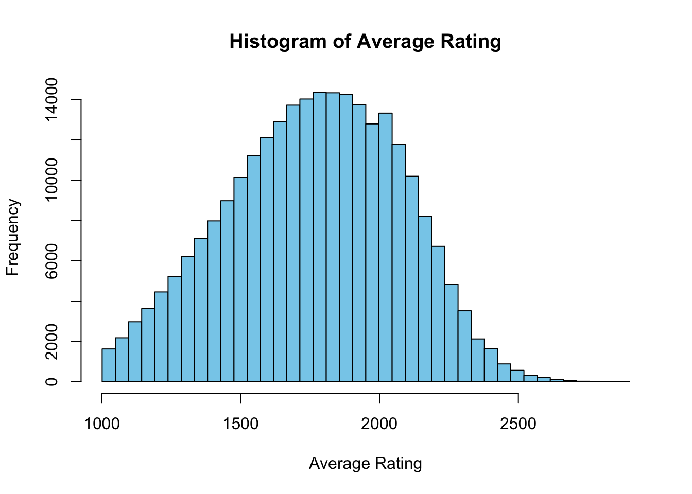
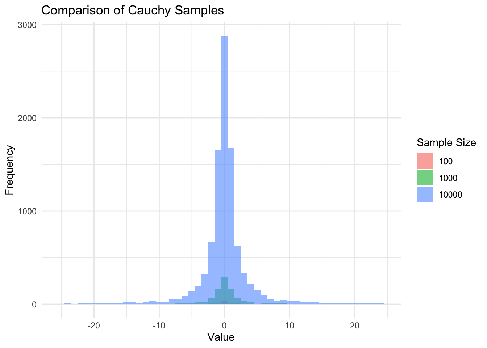
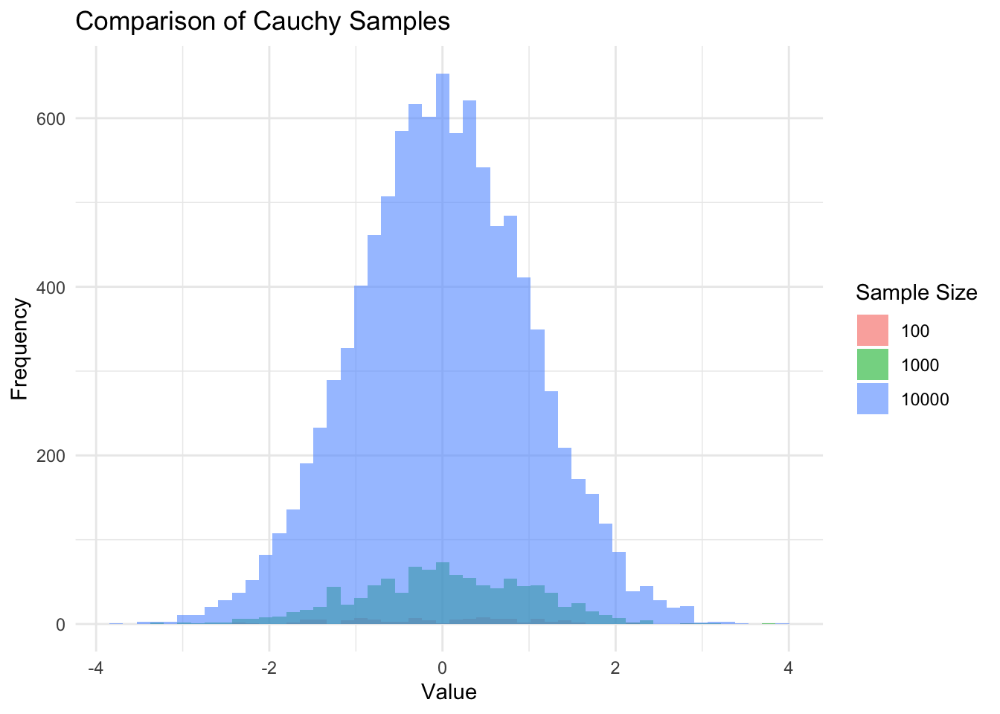
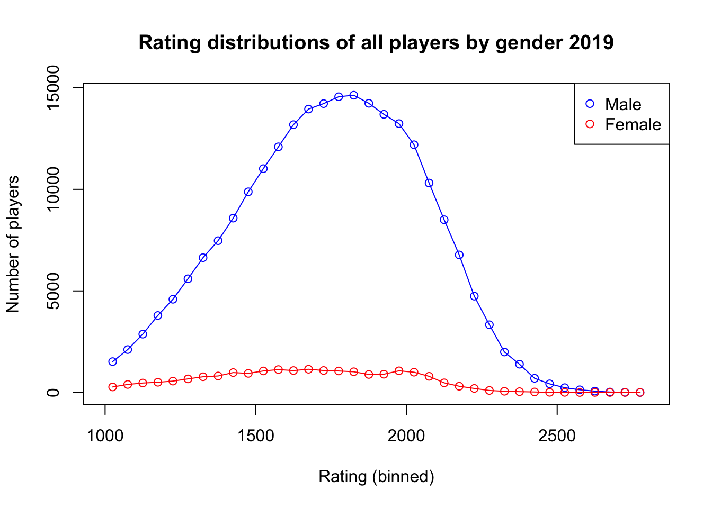
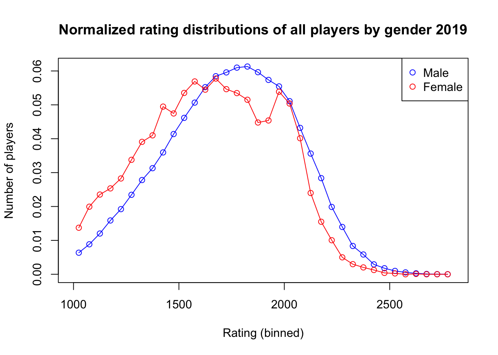
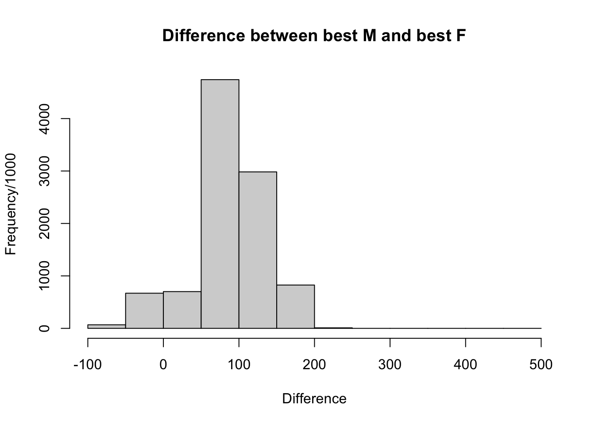

Some have posited that there are differences between men and women which spring out of some genetic component somewhere deep in the chess parts of the brain that were responsible for early human victories over our greatest animal adversaries – allowing us to stall for time with a friendly game of chess until members of our tribe could come spear our adversaries while played for a draw. Thus chess skill would necessarily be unevenly distributed among genders much as hunting was before our species settled down to enjoy some agriculture. Still others believe that chess has an issue with too few women playing which is what explains the majority of the gap between the performance at the highest levels of chess. Due to a lack of recorded games from prehistory, I instead seek to show this second explanation is sufficient for explaining this variation between the two genders in terms of performance.
Other authors have discussed this topic somewhat at length and my code here is adapted from theirs, however my work here covers the whole universe of FIDE ratings rather than only the Indian ratings which should allow us to determine if this sampling variability explanation is merely an Indian phenomena or a broader phenomena.
Due to Covid-19 impacting the number of chess competitions held I use 2019 data and take the average of every players standard ratings for the year to avoid some of the individual variability in ratings throughout the year, this also helps to keep more players in our dataset as those with only one tournament to their name from March can be compared to those who have multiple tournaments from other months not including March.
Statistical Background
If you’re not interested in the general theory of sampling variability feel free to skip this section.
When sampling from a distribution we can generally expect that larger samples are going to include more extreme values from the tails which will greatly influence values such as maximums or minimums. In our discussion of chess our focus is on detecting if the difference between the greatest ELO values is influenced by this sampling size behavior. Because visually we can see that there is a long thin right tail after 2500 ELO.
Heavy tails
In order to demonstrate on a toy example we can sample from a heavy-tailed distribution and see how our maximums and minimums change as the sample size changes. Visually we can see how the coverage of the x-axis increases with the increase in sample size in the plots below.
# Sample sizes to generate
sample_sizes <- c(100, 1000, 10000)
# Initialize list to store extremes for later comparison
extremes <- list()
# Generate samples and prepare for plotting
data <- data.frame()
for (size in sample_sizes) {
sample <- rcauchy(size)
# Calculate and store extremes
min_val <- min(sample)
max_val <- max(sample)
extremes[[length(extremes) + 1]] <- c(min_val, max_val)
# Prepare data for plotting
temp_data <- data.frame(Value = sample, Size = factor(size))
data <- rbind(data, temp_data)
}
# Filter the data to remove extreme values for better visualization
data <- subset(data, Value > -25 & Value < 25)
# Plot using ggplot2
ggplot(data, aes(x=Value, fill=Size)) +
geom_histogram(bins=50, position="identity", alpha=0.6) +
scale_fill_discrete(name="Sample Size") +
labs(title="Comparison of Cauchy Samples", x="Value", y="Frequency") +
theme_minimal()
And we find stark differences between the maximums and minimums in our samples. ::: {.cell hash=‘chess_fide_cache/html/unnamed-chunk-6_10afb748666887fc248fe9c0897ee64b’}
# Print extremes
for (i in 1:length(sample_sizes)) {
size <- sample_sizes[i]
min_val <- extremes[[i]][1]
max_val <- extremes[[i]][2]
cat(sprintf("Sample size %d: Min %.2f, Max %.2f\n", size, min_val, max_val))
}Sample size 100: Min -27.65, Max 14.31
Sample size 1000: Min -138.42, Max 155.19
Sample size 10000: Min -1618.11, Max 3905.19:::
Normal distribution
Even for distributions that are not heavy-tailed such as the normal distribution with a mean of 0 and standard deviation of 1 we can see that the maximum and minimum values are increasing in absolute value for increasing sample sizes such that the minimum and the maximum get further from the mean.
extremes <- list()
data <- data.frame()
for (size in sample_sizes) {
sample <- rnorm(size)
# Calculate and store extremes
min_val <- min(sample)
max_val <- max(sample)
mean_val <- mean(sample)
extremes[[length(extremes) + 1]] <- c(min_val, max_val)
# Prepare data for plotting
temp_data <- data.frame(Value = sample, Size = factor(size), Mean = mean_val)
data <- rbind(data, temp_data)
}
# Filter the data to remove extreme values for better visualization
data <- subset(data, Value > -25 & Value < 25)
# Plot using ggplot2
ggplot(data, aes(x=Value, fill=Size)) +
geom_histogram(bins=50, position="identity", alpha=0.6) +
scale_fill_discrete(name="Sample Size") +
labs(title="Comparison of Cauchy Samples", x="Value", y="Frequency") +
theme_minimal()
It doesn’t mean the samples are going to have their maximums or minimums deterministically increase with the increase of the sample size, but the probability that we sample a greater maximum or lower minimum increases as the sample size increases. ::: {.cell hash=‘chess_fide_cache/html/unnamed-chunk-8_20019db1b2dfe0d46cf6b51b7297c066’}
# Print extremes
for (i in 1:length(sample_sizes)) {
size <- sample_sizes[i]
min_val <- extremes[[i]][1]
max_val <- extremes[[i]][2]
cat(sprintf("Sample size %d: Min %.2f, Max %.2f\n", size, min_val, max_val))}Sample size 100: Min -2.35, Max 2.75
Sample size 1000: Min -3.29, Max 3.72
Sample size 10000: Min -3.85, Max 3.85:::
With all of this background in mind we can proceed to our analysis of the realworld data.
Analysis
I begin by loading in the data, removing players who do not have a standard rating and ensuring that we do not include Juniors (<18 years old players) in our ratings as their ratings fluctuate more than those of older players.
I begin by splitting our data by gender and looking at the basic stats. I find that the top 20 chess players in the world are all men for this data. Additionally we can see that the number of males in the sample is an order of magnitude larger than that of females while the difference in the top ELO is ~190 points. ::: {.cell hash=‘chess_fide_cache/html/unnamed-chunk-9_f9da03142eec18a82a9aa2689a7c93cf’}
:::
basic_stats Category Value
1 Male Max ELO 2863
2 Female Max ELO 2675
3 Count Male 238720
4 Count Female 19806We can see the names of the top 20 players in our data, and further the gender split which it turns out is entirely male. ::: {.cell hash=‘chess_fide_cache/html/unnamed-chunk-12_a8badda4bb482165d278d46d99ef5037’}
rating_ordered <- rating[order(rating$average_rating_standard, decreasing = TRUE),]
I_top <- head(rating_ordered, 20)
table(I_top$gender)
M
20 table(I_top$name)
Anand, Viswanathan Aronian, Levon Artemiev, Vladislav
1 1 1
Carlsen, Magnus Caruana, Fabiano Ding, Liren
1 1 1
Dominguez Perez, Leinier Giri, Anish Grischuk, Alexander
1 1 1
Karjakin, Sergey Kasparov, Garry Kramnik, Vladimir
1 1 1
Mamedyarov, Shakhriyar Nakamura, Hikaru Nepomniachtchi, Ian
1 1 1
Radjabov, Teimour Rapport, Richard So, Wesley
1 1 1
Vachier-Lagrave, Maxime Yu, Yangyi
1 1 :::
Here we take some of the basic statistics of the male and female ratings and we can see that there is a ~100 point difference between the two groups’ mean ELO.
mu_std_table Category Value
1 mean Male 1769
2 mean Female 1679
3 standard deviation Male 311
4 standard deviation Female 316Using the same method as Wei Ji, we do a permutation of the ratings without respect to gender. So what that means is we take the number of women and men in the sample, and draw samples with those same sizes from the pooled data. This means that we will get samples with the size of the same smaller size that women represent in our real data but including males. This will allow us to see how much of the variation between men and women is simply due to the fact that the sample of women who do chess is much smaller than that of men. ::: {.cell hash=‘chess_fide_cache/html/unnamed-chunk-15_845c4ab3fcfcf0a9dd250bad2169de95’}
library(parallel)
# Assuming ndraws, n_large, rating$average_rating_standard are defined
ndraws <- 10000 # example value
n_large <- n_M
n_small <- n_F
# Detect the number of available cores
no_cores <- detectCores() - 1
# Define a function to perform what was originally in the loop
perform_draw <- function(i) {
rating_perm <- sample(rating$average_rating_standard)
draw_large <- rating_perm[1:n_large]
draw_small <- rating_perm[(n_large + 1):length(rating_perm)]
c(max_large = max(draw_large), max_small = max(draw_small))
}
# Use mclapply to run iterations in parallel
results <- mclapply(1:ndraws, perform_draw, mc.cores = no_cores)
# Extract max_large and max_small from results
max_large <- sapply(results, `[[`, "max_large")
max_small <- sapply(results, `[[`, "max_small"):::
Using the simulated samples above we can get an average difference between groups with these differing sizes as well as the standard deviation of this difference. ::: {.cell hash=‘chess_fide_cache/html/unnamed-chunk-16_d1ebc0783f4ec3c7ff2427a448d3d569’}
delta <- max_large - max_small
delta_mean <- mean(delta)
delta_std <- sd(delta):::
Here is a graph where we can see that there are many fewer women than men who play chess, but their coverage of the ELO ratings is still similar. ::: {.cell hash=‘chess_fide_cache/html/unnamed-chunk-17_29a40c2bcb87e99ba7215067a8990d6e’}
plot(rating_centers, h_M, type = 'o', xlab = 'Rating (binned)', ylab = 'Number of players',
xlim = c(1000, 2800), ylim = range(c(h_M, h_F)), main = 'Rating distributions of all players by gender 2019', col = 'blue')
points(rating_centers, h_F, type = 'o', col = 'red')
legend("topright", legend=c("Male", "Female"), col=c("blue", "red"), pch=1)
:::
Here we adjust the rating distributions by number of participants for both men and women in order to see if the shape and location of the distributions are significantly different. We can see the slight leftward shift in the female ratings distribution consistent with the ~90 rating point difference found earlier. ::: {.cell hash=‘chess_fide_cache/html/unnamed-chunk-18_098a5874808402b3e841e6f66368c8c9’}
plot(rating_centers, hn_M, type = 'o', xlab = 'Rating (binned)', ylab = 'Number of players',
xlim = c(1000, 2800), ylim = range(c(hn_M, hn_F)), main = 'Normalized rating distributions of all players by gender 2019', col = 'blue')
points(rating_centers, hn_F, type = 'o', col = 'red')
legend("topright", legend=c("Male", "Female"), col=c("blue", "red"), pch=1)
:::
Here we plot the distribution of differences found from the resampling process that we performed previously. The mean value is ~87 points difference between the simulated groups. ::: {.cell hash=‘chess_fide_cache/html/unnamed-chunk-19_e068825b146310af07122c163d76d5bf’}
hist(delta, breaks = seq(-100, 500, by = 50), main = 'Difference between best M and best F',
xlab = 'Difference', ylab = 'Frequency/1000')
:::
# trying to see how much delta accounts for..
rating_M_ordered <- rating_M[order(rating_M$average_rating_standard, decreasing = TRUE),]
I_top_M <- head(rating_M_ordered, 20)
rating_F_ordered <- rating_F[order(rating_F$average_rating_standard, decreasing = TRUE),]
I_top_F <- head(rating_F_ordered, 20)
mean(I_top_M$average_rating_standard) - mean(I_top_F$average_rating_standard)[1] 231.0042We use a two-tailed t-test in order to see if there is a significant difference between the average of the delta between the simulated maximum male sized group ELO and the simulated maximum female sized group ELO and the real difference between the maximum Male ELO and the maximum Female ELO. We use a two-tailed t-test because we wish to detect a difference between the simulated and real deltas in either direction. ::: {.cell hash=‘chess_fide_cache/html/unnamed-chunk-21_ba02b0fbbd2522629f793afa8043cf1f’}
z <- ((max_M - max_F) - delta_mean) / delta_std
# Calculate two-tailed p-value
p_value <- 2 * (1 - pnorm(abs(z)))
p_value[1] 0.04241901:::
We find at a significance of 0.01 that there is no difference between the simulated and the real difference in the top ELOs of men and women. From this we can see that a primary explanation of the male-female performance gap is simply a pipeline issue. The underlying distribution of male and female performance is the same, the difference comes only from the fact that the number of males competing in chess dwarfs that of females. Additionally I perform a power analysis to see that the result is well powered and we should have detected a difference outside of sampling variability were there one.
effect_size <- 0.1
alpha <- 0.01
power <- 0.95
sample_size <- NULL # If you want to calculate sample size, set this to NULL
# Perform power analysis
result <- pwr.t.test(d = effect_size, sig.level = alpha, power = power,
n = sample_size, alternative = "two.sided")
result
Two-sample t test power calculation
n = 3564.492
d = 0.1
sig.level = 0.01
power = 0.95
alternative = two.sided
NOTE: n is number in *each* groupConsidering our sample size (males and females together) is ~258000 individual observations and the sample of our simulated deltas is 10000, our analysis satisfies a fairly strict power threshold and would detect a very small effect (Cohen’s d of 0.1) at an alpha of 0.01, detecting a true effect with 95% probability. Thus we can be fairly certain in our results.
Additional notes on sampling variability
We can get a good baseline estimate for how often it is that a small sample has a larger maximum than a larger sample from the same distribution from the normal distribution. Here we can see that less than ten percent of the time we should expect the smaller sample to have a larger maximum even from the same distribution! The gendered differences in results we can observe in the chess world are probably coming from the fact that there are so many fewer women participating.
# Sample sizes to compare (scaled down)
sample_size_small <- 2000
sample_size_large <- 24000
# Initialize counter for tracking when the smaller sample has a larger maximum
counter <- 0
# Number of iterations
iterations <- 10000
# Loop for performing the comparison across iterations
for (i in 1:iterations) {
# Generate samples for each size
sample_small <- rnorm(sample_size_small)
sample_large <- rnorm(sample_size_large)
# Compare max values and update counter if smaller sample has a larger max
if (max(sample_small) > max(sample_large)) {
counter <- counter + 1
}
}
# Calculate the percentage
percentage <- counter / iterations * 100
# Print the result
cat("Percentage of times the smaller sample (2000) has a larger maximum than the larger sample (24000):", percentage, "%\n")Percentage of times the smaller sample (2000) has a larger maximum than the larger sample (24000): 7.86 %